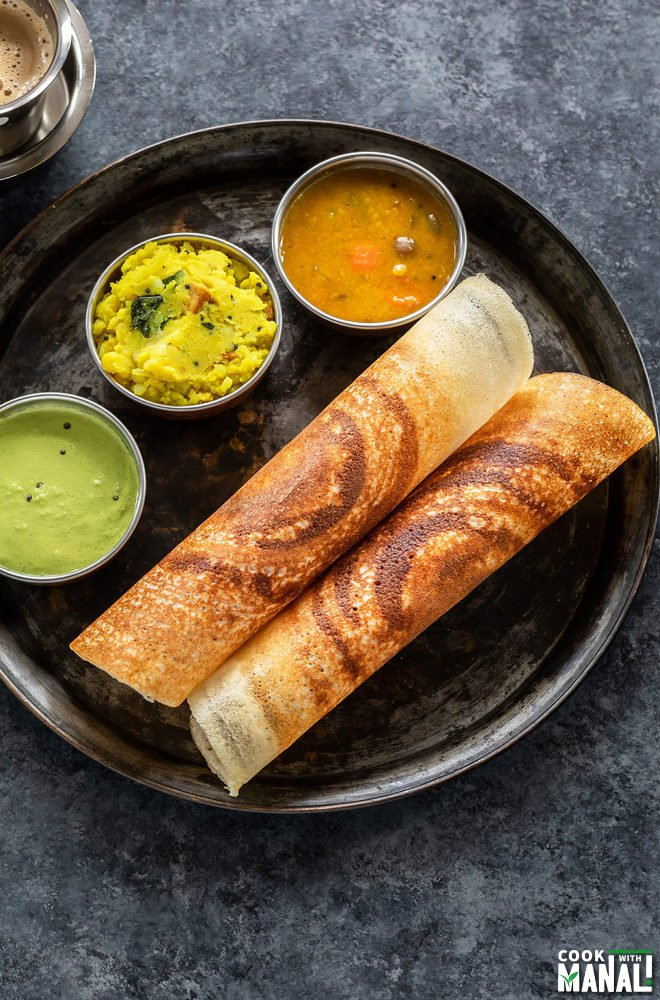

Masala Dosa

Description
This classic Masala dosa recipe makes perfectly light, soft and crispy crepes
stuffed with a savory, wonderfully spiced potato and onion filling. It might
take a bit of time to make delicious hotel style masala dosa, but with my
step-by-step instructions and photos I promise it will be easier than you
think and is so worth the effort!
Ingredients
- For Potato Masala:
- Oil – 2 tbsp
- Mustard Seeds – 1 tbsp
- Cumin Seeds – 1 tbsp
- Chana Dal – 1 tbsp
- Urad Dal – 1/2 tbsp
- Asafoetida – 1 pinch
- Dried Red Chilli – 1
- Curry Leaves
- Onion (chopped) – 1/2
- Potatoes (boiled and mashed) – 3
- Ginger (chopped) – 1
- Green Chilli (chopped) – 1
- Coriander (chopped) – 1 tbsp
- Turmeric – 1/2 tbsp
- Salt – 1/2 tbsp
- Lemon Juice – 1 tbsp
- For Red Chutney:
- Chana Dal – 2 tbsp
- Onion (chopped) – 1/2
- Ginger (chopped) – 1 inch
- Cloves of Garlic (chopped) – 3 cloves
- Oil – 2 tbsp
- Dried Kashmiri Red Chillies – 3
- Salt – 1/2 tbsp
- Turmeric – 1/4 tbsp
- Water –1/4 cup
Steps
- Preparing the Potato Masala
-
Add mustard seeds, cumin seeds, chana dal, urad dal, hing, dried chilli
and curry leaves in 2 tbsp of heated-up oil in a wok. Allow them to
splutter. Sauté well.
- Add onions, green chilli and ginger and sauté.
-
Add herbs like turmeric and salt. Add mashed potatoes and mix the contents
thoroughly.
-
Cook the potatoes well and finish by adding coriander and lemon juice.
- Preparing the Red Garlic Chutney
-
Roast chana dal in 2 tbsp of heated-up oil till it turns golden brown.
-
Add onions, garlic and ginger and stir well. Also, add dried red chillies
and turmeric.
- Grind the mixture after adding salt.
- Blend the paste by adding water as needed.
- Preparing the Dosas
- Mix the fermented dosa with 1/2 tbsp salt and 1/4 tbsp sugar.
-
Heat the griddle and pour a ladle full of batter. Spread the batter in a
circular motion.
- Spread butter and the chutney over the dosa liberally.
- Add potato masala on one side of the dosa.
-
Roast the dosa for 30 seconds, fold it over the empty side and serve hot
with sambar and coconut chutney.
Return to main page